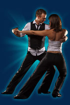

Warsztaty WEST COAST SWING

Kiedy muzyka jest zbyt wolna na wszystkie tradycyjne tańce albo po prostu "nie za bardzo pasuje" - WEST COAST SWING na pewno będzie najlepszym wyborem. Od wolnego Bluesa do transowego HipHopu - "Swing z Zachodniego Wybrzeża" pozwala tańczyć do prawie każdej muzyki.
Może być energetyczny lub delikatny, pełen pasji lub zrelaksowany, zabawowy albo w pełni lubieżny.
Kto może tańczyć? KAŻDY! Jeden z najbardziej popularnych w Północnej Ameryce - taniec ten pozwala bawić się każdemu. Potrzeba tylko odrobiny cierpliwości. Nie potrzebne są wielkie możliwości fizyczne. Ważniejsze są wyczucie rytmu, interpretacja muzyki i ktoś z kim możemy "pośmigać" :)
Zobacz jak wygląda WEST COAST SWING w wykonaniu mistrzów:
DNI I GODZINY WARSZTATÓW:
30 stycznia, sobota:
Warsztat A: Podstawy.
godz. 14.00 - 15.30 (90min)
Podczas tego warsztatu poznacie elementy podstawowe, z których zawsze będziemy korzystali tańcząc W.C.S.
Pierwsze zetknięcie się z nowym tańcem powinno być tak sformułowane by dawało zarys formie tanecznej, jej kluczowych technik, sposobów poruszania się oraz interpretacji rytmów.
Poznacie pierwszych 10 elementów w W.C.S.
- rytm pojedynczy
- rytm podwójny
- rytm potrójny
- chodzenie do przodu
- chodzenie do tyłu
- zwrot w lewo
- zwrot w prawo
- sugar push
- left side pass
- right side pass
Omówimy także i przećwiczymy różnorodne aspekty:
- dynamiki tańca liniowego
- techniki połączenia w parze oraz prowadzenia liniowego
- tańczenia w pozycji otwartej i zamkniętej
- rozliczeń rytmicznych w parze
- dynamiki West Coast Strut chodzenia w stylu WCS
- rytmiki i muzyki Blues, Swing, R&B, Funk, House i HipHop
Wprowadzimy pojęcie "anchor" kotwicy.
Warsztat ten to absolutna konieczność dla nowicjuszy, ale także dobra powtórka dla tych którzy już tańczą W.C.S.
Warsztat B: Geometria figur średnio zaawansowanych, technika obrotów.
godz. 17.00 - 18.30 (90min)
Podczas tych zajęć poznacie:
- schematy odpowiedzialne za figury średnio zaawansowane, tak zwane "baty"-"whips"
- technikę obrotów
- technikę obracania partnerki i bycia obracaną
- kilka sposobów na prowadzanie obrotów partnerki w poznanych już schematach
Warsztat C: Dynamika tańczenia zaawansowanego.
godz. 18.45 - 20.15 (90min)
Figury zaawansowane w tym:
- przedłużania "batów"
- zaawansowane obracanie partnerki
- zatrzymania "freeze"
- uprowadzenia "hijack" przejmowanie inicjatywy przez partnerkę
31 stycznia, niedziela:
Warsztat A godz. 9.00 - 10.00 (60min)
Warsztat B godz. 10.15 - 11.15(60min)
Krótka powtórka materiału z Soboty i rozszerzenie o dodatkowe figury i kombinacje.
Warsztat C. godz. 11.30 - 15.00(90min)
- - 45min: elementy widowiskowe - ramiona, powielanie obrotów, skracanie i przyspieszanie figur
- - 45min: zaawansowany styling - zaawansowana rytmika, interpretacja muzyki, styling dla pań
CENA WARSZTATÓW:
SOBOTA
Warsztat A + B - 90zł (3h)
Warsztat B + C - 90zł (3h)
Warsztat A + B + C - 110zł (4,5h)
NIEDZIELA
Warsztaty A + B + C - 100zł (3,5)
Pakiet wszystkich warsztatów - 170zł (8h)
Zapisy:
mail: sempretaniec@sempretaniec.pl
tel. 0 12 292 2002
kom. 509 656 214
ZAPRASZAMY!